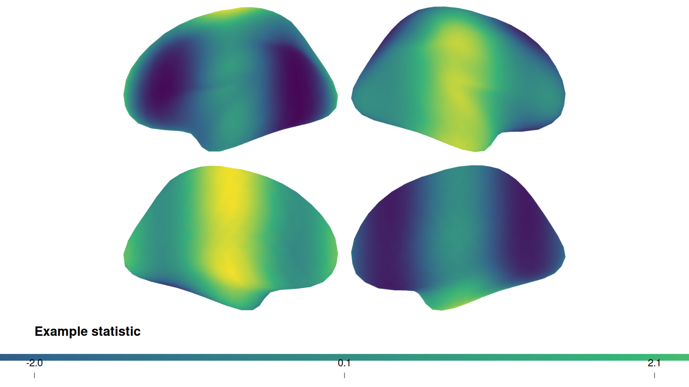
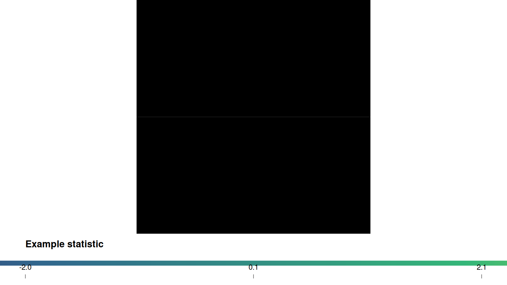

Publication-quality surface figures
neurosurf authors
2026-07-03
Source:vignettes/surface-figures.Rmd
surface-figures.RmdThis vignette builds a multi-view, publication-ready surface figure
from fsaverage surfaces and an atlas, using neurosurf’s high-level
plotting API: surface_plot(),
add_surface_layer(), add_atlas_outline(), and
draw_surface_plot().
We will:
- load the bundled fsaverage
std.8surfaces; - map a Schaefer 200-parcel atlas from MNI152 volume space onto the surface;
- overlay a continuous statistical map with a colourbar; and
- add crisp atlas outlines for anatomical reference.
Load surfaces and an atlas
The package ships decimated fsaverage surfaces (std.8).
We use the inflated surfaces for display, and the
white/pial surfaces to project the
atlas from the volume onto the surface.
fs_infl <- load_fsaverage_std8("inflated")
lh <- fs_infl$lh
rh <- fs_infl$rh
read_geom <- function(name) {
read_surf_geometry(system.file("extdata", name, package = "neurosurf"))
}
lh_white <- read_geom("std.8_lh.white.asc")
lh_pial <- read_geom("std.8_lh.pial.asc")
rh_white <- read_geom("std.8_rh.white.asc")
rh_pial <- read_geom("std.8_rh.pial.asc")vol_to_surf() maps each surface vertex to the most
common atlas label among the voxels between the white and pial surfaces,
giving a per-vertex parcel id for each hemisphere.
atlas <- neuroim2::read_vol(system.file(
"extdata",
"Schaefer2018_200Parcels_7Networks_order_FSLMNI152_1mm.nii.gz",
package = "neurosurf"
))
lh_parcels <- as.integer(vol_to_surf(lh_white, lh_pial, atlas, fun = "mode")@data)
rh_parcels <- as.integer(vol_to_surf(rh_white, rh_pial, atlas, fun = "mode")@data)
# A single left-to-right vector matching the plotting geometry
parcel_labels <- c(lh_parcels, rh_parcels)A note on resolution.
std.8is a heavily decimated mesh (642 vertices per hemisphere), so a 200-parcel atlas is represented coarsely. The outlines below trace whatever parcels land on the mesh; on a full-resolution surface the same code produces finer borders.
A continuous overlay with a colourbar
We build a neurosurf_plot with a bilateral grid layout
and two views (lateral and medial), then add a
continuous map. Here the map is a smooth synthetic statistic standing in
for, e.g., a contrast or connectivity value; in practice you would pass
your own per-vertex values.
# Smooth synthetic per-vertex statistic (replace with your own map)
example_statistic <- function(geom) {
xyz <- coords(geom)
v <- sin(xyz[, 1] / 18) + cos(xyz[, 2] / 22)
(v - mean(v)) / stats::sd(v)
}
stat <- c(example_statistic(lh), example_statistic(rh))
p <- surface_plot(lh = lh, rh = rh,
views = c("lateral", "medial"),
layout = "grid", zoom = 2.5)
p <- add_surface_layer(
p,
data = stat,
cmap = "viridis",
show_colorbar = TRUE,
label = "Example statistic",
alpha = 0.95
)
plot(p, colorbar = TRUE, cbar_location = "bottom",
cbar_kws = list(n_ticks = 3, digits = 1, label_cex = 0.7, title_cex = 0.9))
Adding atlas outlines
add_atlas_outline() overlays parcel boundaries. By
default it uses the "midpoint" boundary method, which draws
a single crisp contour running between differing labels (no double
lines), with a subtle halo for legibility against the colour map.
p <- add_atlas_outline(
p,
labels = parcel_labels,
label = "Schaefer-200",
outline_lwd = 1.0,
outline_offset = 0.5
)
plot(p, colorbar = TRUE, cbar_location = "bottom",
cbar_kws = list(n_ticks = 3, digits = 1, label_cex = 0.7, title_cex = 0.9))
#> Error : Chromote: timed out waiting for response to command Page.disable
#> Error : Chromote: timed out waiting for response to command Page.disable
#> Error : Chromote: timed out waiting for response to command Page.disable
#> Error : Chromote: timed out waiting for response to command Page.disable
The figure now shows left and right inflated surfaces in lateral and
medial views, a continuous map with a clean colourbar, and parcel
outlines for anatomical reference. The same pattern works for any
surface + atlas combination that can be loaded as a
SurfaceGeometry plus per-vertex labels.
Next Steps
-
vignette("displaying-surfaces")— lower-level RGL rendering with curvature shading, data overlays, thresholds, and PNG snapshots. -
vignette("interactive-surfaces")— interactive HTML widgets withsurfwidget()for exploratory analysis. -
vignette("introduction-to-neurosurf")— the data structures (SurfaceGeometry,NeuroSurface,NeuroSurfaceVector) that underpin these workflows.